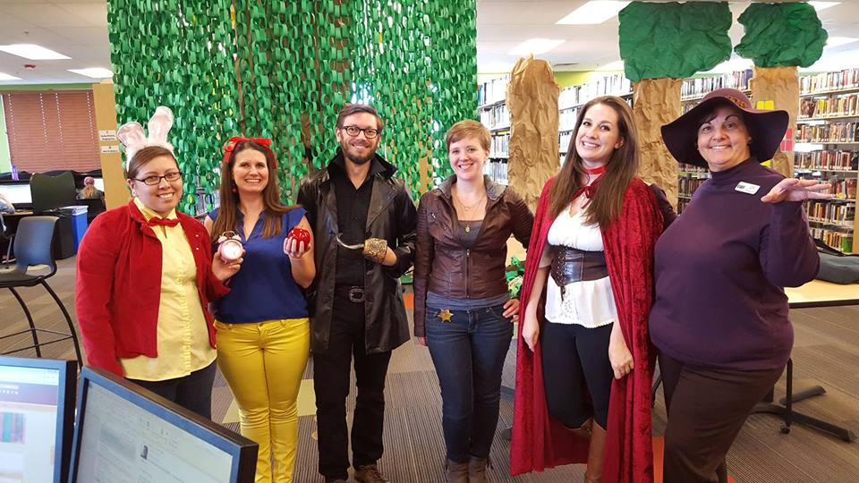

COMM 101
To follow along, load this in your browser: http://www.ryanpatrickrandall.com/talks/comm101.html
Created by Ryan P. Randall
Hello!
I'm Ryan Randall, from the library!
I'm here to help you prepare for your next assignment. And the rest of your classes, to be honest.
What have you already done in the library?
- Printing?
- Used the textbooks on reserve?
- Used one of our many computers?
- Requested an article or book?
- Used the online chat?
- Used the anatomical models?
Have you used the children's section with your kids?

Did you come dressed up for Halloween?>

Have you checked out anything from our growing Popular Fiction sections?

Here's some more library resources!
- Databases—including movies!
- Research Guides that help you know where to start!
- Schedule an Appointment with a Librarian—hey, it's free!
- Book a Group Study Room—we've got two of them!
"Don't Judge a Book by Its Cover"

- That's helpful advice, sometimes.
- But what do you judge sources by?
CRAAP test
- Currency
- Relevance
- Authority
- Accuracy
- Purpose
Blakeslee, S. (2004). The CRAAP test.
Currency

- When was this source published?
- The timeframe of some information is crucial.
Relevance

- Why is this right for this assignment?
- Are its approach and depth suitable for your purposes?
Authority

- Who wrote this?
- Do they have appropriate expertise on this subject?
Accuracy

- How does this source support its claims?
- Can you check where the authors are getting their facts and examples?
Purpose

- Why was this written?
- Is the author trying to benefit personally from this?
CRAAP test
- Currency
- Relevance
- Authority
- Accuracy
- Purpose
Blakeslee, S. (2004). The CRAAP test.
COMM 101 Research Guide
Here's some great places to start!
- Gale Virtual Reference Library—it's like Wikipedia, but better
- CQ Researcher—lots of jumping-off points and timelines
- Academic Search Complete—our "supercenter" database
CRAAP test
- Currency
- Relevance
- Authority
- Accuracy
- Purpose
Blakeslee, S. (2004). The CRAAP test.
CWI Library Databases
Even better than Google Scholar!
- Focus on disciplines taught at CWI
- Provides access to whole source
- Authoritative
Keep in touch with the CWI Library
Please schedule an appointment with a CWI Librarian if you'd like further research assistance.
You can also get help from the College of Western Idaho Libraries through our online chat, our FAQ pages, calling or texting us, and email!
Thank you for your time!
"Pulling a book off the shelf" photo by Bennington College's Crossett Library with a CC BY-NC-SA 2.0 license.
Blakeslee, S. (2004). The CRAAP test. LOEX Quarterly, 31(3), 6-7. Retrieved from http://commons.emich.edu/loexquarterly/vol31/iss3/4.
"Purpose" photo by Seth Sawyers with a CC BY 2.0 license and given some minimal filtering by Ryan.